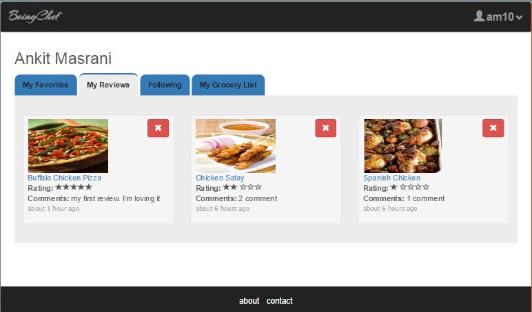

BeingChef User Dashboard-Reviews
The user dashboard page consists of the name of the user in the heading and a tab structure to
allow the user to navigate to various sections of his profile.
- Shown below is the reviews tab of the user.
- The reviews are sorted by latest to newest.
- On this tab the user can view the review comments, rating and time span since the review
for the dish was provided.
- A particular review for a dish can be removed by clicking on the red remove icon besides the dish
image.
